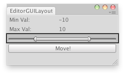

EditorGUILayout.MinMaxSlider
public static void MinMaxSlider(ref float minValue,
ref float maxValue,
float minLimit,
float maxLimit,
params GUILayoutOption[] options);
public static void MinMaxSlider(string label,
ref float minValue,
ref float maxValue,
float minLimit,
float maxLimit,
params GUILayoutOption[] options);
public static void MinMaxSlider(GUIContent label,
ref float minValue,
ref float maxValue,
float minLimit,
float maxLimit,
params GUILayoutOption[] options);
Parameters
| label | Optional label in front of the slider. | |
| minValue | The lower value of the range the slider shows, passed by reference. | |
| maxValue | The upper value at the range the slider shows, passed by reference. | |
| minLimit | The limit at the left end of the slider. | |
| maxLimit | The limit at the right end of the slider. | |
| options | An optional list of layout options that specify extra layout properties. Any values passed in here will override settings defined by the style.See Also: GUILayout.Width, GUILayout.Height, GUILayout.MinWidth, GUILayout.MaxWidth, GUILayout.MinHeight, GUILayout.MaxHeight, GUILayout.ExpandWidth, GUILayout.ExpandHeight. |
Description 描述
Make a special slider the user can use to specify a range between a min and a max.

Moves the selected object randomly betweeen the interval.
// Place the selected object randomly between the interval of the Min Max Slider // in the X,Y,Z coords
using UnityEditor; using UnityEngine;
public class ExampleClass : EditorWindow { float minVal = -10; float minLimit = -20; float maxVal = 10; float maxLimit = 20;
[MenuItem("Examples/Place Object Randomly")] static void Init() { ExampleClass window = (ExampleClass)GetWindow(typeof(ExampleClass)); window.Show(); }
void OnGUI() { EditorGUILayout.LabelField("Min Val:", minVal.ToString()); EditorGUILayout.LabelField("Max Val:", maxVal.ToString()); EditorGUILayout.MinMaxSlider(ref minVal, ref maxVal, minLimit, maxLimit); if (GUILayout.Button("Move!")) PlaceRandomly(); }
void PlaceRandomly() { if (Selection.activeTransform) Selection.activeTransform.position = new Vector3(Random.Range(minVal, maxVal), Random.Range(minVal, maxVal), Random.Range(minVal, maxVal)); else Debug.LogError("Select a GameObject to randomize its position."); } }